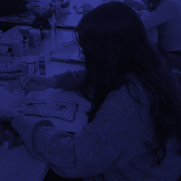

Acerca del desarrollador

Nicole Olivera
Nicole Olivera es una joven de 23 años que vive en Malvinas Argentinas. Desde pequeña, ha tenido una pasión por el mundo visual y creativo, lo que la llevó a estudiar en el departamento de Audiovisuales justo después de terminar el secundario. Durante esos años, aprendió muchas herramientas interesantes, pero en el último tiempo sintió la necesidad de explorar nuevas áreas y conocimientos. Este año, decidió cambiarse a la carrera de Multimediales, buscando aprender cosas que se alineen más con sus intereses actuales y su deseo de explorar la intersección entre lo audiovisual, el diseño y la tecnología. Su curiosidad y ganas de descubrir nuevos caminos la guían en esta nueva etapa.